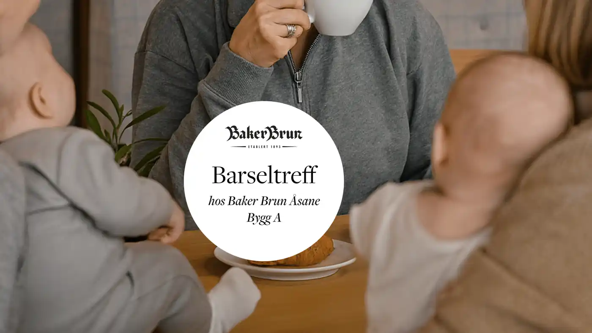

Bergen · bakeri siden 1800-tallet
Hele Bergens favorittbakeri.
Historien om Baker Brun er en historie om søte deiger, solid håndverk og store drømmer – og alt startet på 1800-tallet i Bergen.
25 bakerikaféer6 Solbrød-utsalgBergen og omegn
01 — Tjenester
Det vi leverer
Ferske fristelser hver dag – og bestillinger til møter, fester og kantiner.

02 — Håndverk
Søte deiger, solid håndverk
Våre bakerier baker rykende ferske fristelser hver dag – det merkes på smaken. Hos oss er målet å gjøre hverdagskosen til dagens høydepunkt.
- Ferskt – bakt hver dag.
- Håndverk – tradisjon siden 1800-tallet.
- Lokalt – 25 kafeer i Bergen og omegn.
03 — Bestill
Slik bestiller du
Møtemat, kaker og større leveranser.
- Velg
Møtemat, kake eller storhusholdning.
- Fortell
Antall, dato og hvor det skal hentes eller leveres.
- Bekreft
Vi bekrefter bestillingen.
- Hent eller få levert
På avtalt tid.
«Målet er å gjøre hverdagskosen til dagens høydepunkt.»
By på det lille ekstra
Håndlaget møtemat og kaker fra Baker Brun – bestill til møtet, festen eller kantina.